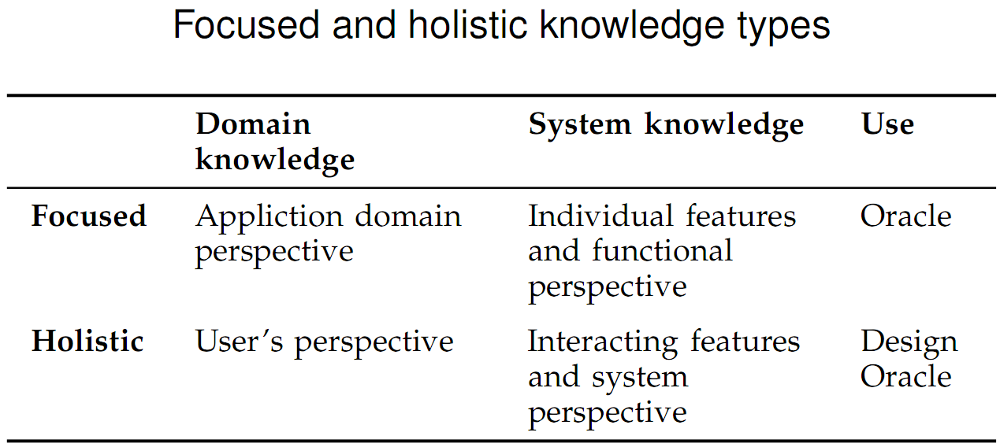

What’s in this paper?
• Analysis of knowledge use during Exploratory Testing sessions.
• Domain, system, or general knowledge was used.
• Knowledge was applied either in test design or as a test oracle (= deciding is a particular finding a defect or not)
• Exploratory Testing benefits from software testers with high domain knowledge
Abstract
We present a field study on how testers use knowledge while performing exploratory software testing in industrial settings. We video recorded 12 testing sessions in four industrial organizations, having our subjects think aloud while performing their usual functional testing work. Using applied grounded theory, we analyzed how the subjects performed tests, and what type of knowledge they utilized. We discuss how testers recognize failures based on their personal knowledge without detailed test case descriptions. The knowledge is classified under the categories of domain knowledge, system knowledge, and general software engineering knowledge. We found that testers applied their knowledge either as a test oracle to determine whether a result was correct or not, or for test design, to guide them in selecting objects for test and designing tests. Interestingly, a large number of failures, windfall failures, were found outside the actual focus areas of testing as a result of exploratory investigation. We conclude that the way exploratory testers apply their knowledge for test design and failure recognition differs clearly from the test-case--based paradigm and is one of the explanatory factors of the effectiveness of the exploratory testing approach.
Ref
Itkonen J., Mäntylä M. V. and Lassenius, C. "The Role of the Tester's Knowledge in Exploratory Software Testing" IEEE Transactions on Software Engineering, vol. 39, no 3, May 2013, pp. 707-724
PDF,
{kind=link}